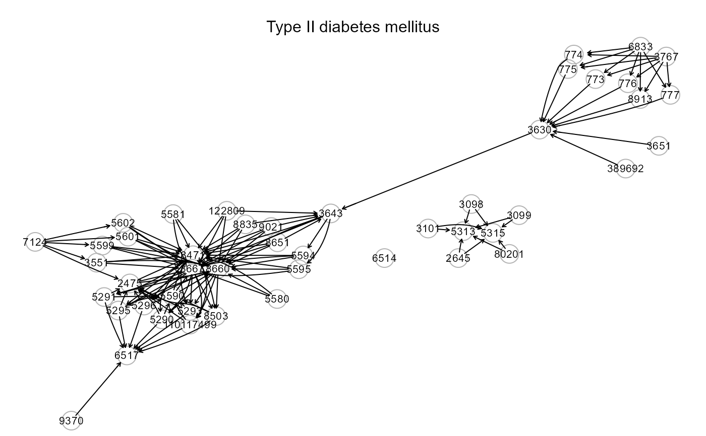

KEGG pathways extracted using the ROntoTools
R package (update: February, 2024).
kegg.pathways"kegg.pathways" is a list of 227 igraph objects corresponding to the KEGG pathways.
Kanehisa M, Goto S (1999). KEGG: kyoto encyclopedia of genes and genomes. Nucleic Acid Research 28(1): 27-30. <https://doi.org/10.1093/nar/27.1.29>
Calin Voichita, Sahar Ansari and Sorin Draghici (2023). ROntoTools: R Onto-Tools suite. R package version 2.30.0.
# \donttest{
library(igraph)
# KEGG pathways
names(kegg.pathways)
#> [1] "mRNA surveillance pathway"
#> [2] "Protein processing in endoplasmic reticulum"
#> [3] "SNARE interactions in vesicular transport"
#> [4] "Sulfur relay system"
#> [5] "RNA degradation"
#> [6] "Homologous recombination"
#> [7] "Fanconi anemia pathway"
#> [8] "Viral life cycle - HIV-1"
#> [9] "MAPK signaling pathway"
#> [10] "ErbB signaling pathway"
#> [11] "Ras signaling pathway"
#> [12] "Rap1 signaling pathway"
#> [13] "Wnt signaling pathway"
#> [14] "Notch signaling pathway"
#> [15] "Hedgehog signaling pathway"
#> [16] "TGF-beta signaling pathway"
#> [17] "Hippo signaling pathway"
#> [18] "Hippo signaling pathway - multiple species"
#> [19] "VEGF signaling pathway"
#> [20] "Apelin signaling pathway"
#> [21] "JAK-STAT signaling pathway"
#> [22] "NF-kappa B signaling pathway"
#> [23] "TNF signaling pathway"
#> [24] "HIF-1 signaling pathway"
#> [25] "FoxO signaling pathway"
#> [26] "Calcium signaling pathway"
#> [27] "Phospholipase D signaling pathway"
#> [28] "Sphingolipid signaling pathway"
#> [29] "cAMP signaling pathway"
#> [30] "cGMP-PKG signaling pathway"
#> [31] "PI3K-Akt signaling pathway"
#> [32] "AMPK signaling pathway"
#> [33] "mTOR signaling pathway"
#> [34] "Neuroactive ligand-receptor interaction"
#> [35] "Cytokine-cytokine receptor interaction"
#> [36] "Viral protein interaction with cytokine and cytokine receptor"
#> [37] "ECM-receptor interaction"
#> [38] "Cell adhesion molecules"
#> [39] "Endocytosis"
#> [40] "Phagosome"
#> [41] "Peroxisome"
#> [42] "Autophagy - animal"
#> [43] "Autophagy - other"
#> [44] "Mitophagy - animal"
#> [45] "Efferocytosis"
#> [46] "Cell cycle"
#> [47] "Oocyte meiosis"
#> [48] "Apoptosis"
#> [49] "Apoptosis - multiple species"
#> [50] "Ferroptosis"
#> [51] "Necroptosis"
#> [52] "p53 signaling pathway"
#> [53] "Cellular senescence"
#> [54] "Focal adhesion"
#> [55] "Adherens junction"
#> [56] "Tight junction"
#> [57] "Gap junction"
#> [58] "Signaling pathways regulating pluripotency of stem cells"
#> [59] "Regulation of actin cytoskeleton"
#> [60] "Complement and coagulation cascades"
#> [61] "Platelet activation"
#> [62] "Neutrophil extracellular trap formation"
#> [63] "Toll-like receptor signaling pathway"
#> [64] "NOD-like receptor signaling pathway"
#> [65] "RIG-I-like receptor signaling pathway"
#> [66] "Cytosolic DNA-sensing pathway"
#> [67] "C-type lectin receptor signaling pathway"
#> [68] "Natural killer cell mediated cytotoxicity"
#> [69] "Antigen processing and presentation"
#> [70] "T cell receptor signaling pathway"
#> [71] "Th1 and Th2 cell differentiation"
#> [72] "Th17 cell differentiation"
#> [73] "IL-17 signaling pathway"
#> [74] "B cell receptor signaling pathway"
#> [75] "Fc epsilon RI signaling pathway"
#> [76] "Fc gamma R-mediated phagocytosis"
#> [77] "Leukocyte transendothelial migration"
#> [78] "Intestinal immune network for IgA production"
#> [79] "Chemokine signaling pathway"
#> [80] "Insulin secretion"
#> [81] "Insulin signaling pathway"
#> [82] "Glucagon signaling pathway"
#> [83] "Regulation of lipolysis in adipocytes"
#> [84] "Adipocytokine signaling pathway"
#> [85] "PPAR signaling pathway"
#> [86] "GnRH secretion"
#> [87] "GnRH signaling pathway"
#> [88] "Ovarian steroidogenesis"
#> [89] "Estrogen signaling pathway"
#> [90] "Progesterone-mediated oocyte maturation"
#> [91] "Prolactin signaling pathway"
#> [92] "Oxytocin signaling pathway"
#> [93] "Relaxin signaling pathway"
#> [94] "Growth hormone synthesis, secretion and action"
#> [95] "Thyroid hormone synthesis"
#> [96] "Thyroid hormone signaling pathway"
#> [97] "Parathyroid hormone synthesis, secretion and action"
#> [98] "Melanogenesis"
#> [99] "Renin secretion"
#> [100] "Aldosterone synthesis and secretion"
#> [101] "Cortisol synthesis and secretion"
#> [102] "Cardiac muscle contraction"
#> [103] "Adrenergic signaling in cardiomyocytes"
#> [104] "Vascular smooth muscle contraction"
#> [105] "Salivary secretion"
#> [106] "Gastric acid secretion"
#> [107] "Pancreatic secretion"
#> [108] "Bile secretion"
#> [109] "Carbohydrate digestion and absorption"
#> [110] "Cholesterol metabolism"
#> [111] "Mineral absorption"
#> [112] "Vasopressin-regulated water reabsorption"
#> [113] "Aldosterone-regulated sodium reabsorption"
#> [114] "Endocrine and other factor-regulated calcium reabsorption"
#> [115] "Glutamatergic synapse"
#> [116] "GABAergic synapse"
#> [117] "Cholinergic synapse"
#> [118] "Dopaminergic synapse"
#> [119] "Serotonergic synapse"
#> [120] "Long-term potentiation"
#> [121] "Long-term depression"
#> [122] "Retrograde endocannabinoid signaling"
#> [123] "Synaptic vesicle cycle"
#> [124] "Neurotrophin signaling pathway"
#> [125] "Phototransduction"
#> [126] "Olfactory transduction"
#> [127] "Taste transduction"
#> [128] "Inflammatory mediator regulation of TRP channels"
#> [129] "Axon guidance"
#> [130] "Osteoclast differentiation"
#> [131] "Longevity regulating pathway"
#> [132] "Longevity regulating pathway - multiple species"
#> [133] "Circadian rhythm"
#> [134] "Circadian entrainment"
#> [135] "Thermogenesis"
#> [136] "Pathways in cancer"
#> [137] "Transcriptional misregulation in cancer"
#> [138] "MicroRNAs in cancer"
#> [139] "Proteoglycans in cancer"
#> [140] "Chemical carcinogenesis - receptor activation"
#> [141] "Viral carcinogenesis"
#> [142] "Central carbon metabolism in cancer"
#> [143] "Choline metabolism in cancer"
#> [144] "PD-L1 expression and PD-1 checkpoint pathway in cancer"
#> [145] "Colorectal cancer"
#> [146] "Pancreatic cancer"
#> [147] "Hepatocellular carcinoma"
#> [148] "Gastric cancer"
#> [149] "Glioma"
#> [150] "Thyroid cancer"
#> [151] "Acute myeloid leukemia"
#> [152] "Chronic myeloid leukemia"
#> [153] "Basal cell carcinoma"
#> [154] "Melanoma"
#> [155] "Renal cell carcinoma"
#> [156] "Bladder cancer"
#> [157] "Prostate cancer"
#> [158] "Endometrial cancer"
#> [159] "Breast cancer"
#> [160] "Small cell lung cancer"
#> [161] "Non-small cell lung cancer"
#> [162] "Human T-cell leukemia virus 1 infection"
#> [163] "Human immunodeficiency virus 1 infection"
#> [164] "Hepatitis B"
#> [165] "Hepatitis C"
#> [166] "Coronavirus disease - COVID-19"
#> [167] "Influenza A"
#> [168] "Measles"
#> [169] "Herpes simplex virus 1 infection"
#> [170] "Human cytomegalovirus infection"
#> [171] "Kaposi sarcoma-associated herpesvirus infection"
#> [172] "Epstein-Barr virus infection"
#> [173] "Human papillomavirus infection"
#> [174] "Vibrio cholerae infection"
#> [175] "Epithelial cell signaling in Helicobacter pylori infection"
#> [176] "Pathogenic Escherichia coli infection"
#> [177] "Salmonella infection"
#> [178] "Shigellosis"
#> [179] "Yersinia infection"
#> [180] "Pertussis"
#> [181] "Legionellosis"
#> [182] "Staphylococcus aureus infection"
#> [183] "Tuberculosis"
#> [184] "Bacterial invasion of epithelial cells"
#> [185] "Amoebiasis"
#> [186] "Malaria"
#> [187] "Toxoplasmosis"
#> [188] "Leishmaniasis"
#> [189] "Chagas disease"
#> [190] "African trypanosomiasis"
#> [191] "Asthma"
#> [192] "Systemic lupus erythematosus"
#> [193] "Rheumatoid arthritis"
#> [194] "Autoimmune thyroid disease"
#> [195] "Inflammatory bowel disease"
#> [196] "Allograft rejection"
#> [197] "Graft-versus-host disease"
#> [198] "Alzheimer disease"
#> [199] "Parkinson disease"
#> [200] "Amyotrophic lateral sclerosis"
#> [201] "Huntington disease"
#> [202] "Spinocerebellar ataxia"
#> [203] "Prion disease"
#> [204] "Pathways of neurodegeneration - multiple diseases"
#> [205] "Cocaine addiction"
#> [206] "Amphetamine addiction"
#> [207] "Morphine addiction"
#> [208] "Alcoholism"
#> [209] "Lipid and atherosclerosis"
#> [210] "Fluid shear stress and atherosclerosis"
#> [211] "Hypertrophic cardiomyopathy"
#> [212] "Arrhythmogenic right ventricular cardiomyopathy"
#> [213] "Dilated cardiomyopathy"
#> [214] "Diabetic cardiomyopathy"
#> [215] "Viral myocarditis"
#> [216] "Type II diabetes mellitus"
#> [217] "Type I diabetes mellitus"
#> [218] "Maturity onset diabetes of the young"
#> [219] "Alcoholic liver disease"
#> [220] "Non-alcoholic fatty liver disease"
#> [221] "Insulin resistance"
#> [222] "AGE-RAGE signaling pathway in diabetic complications"
#> [223] "Cushing syndrome"
#> [224] "EGFR tyrosine kinase inhibitor resistance"
#> [225] "Platinum drug resistance"
#> [226] "Antifolate resistance"
#> [227] "Endocrine resistance"
i<-which(names(kegg.pathways)=="Type II diabetes mellitus");i
#> [1] 216
ig<- kegg.pathways[[i]]
summary(ig)
#> IGRAPH 0b17847 DNW- 46 124 --
#> + attr: name (v/c), weight (e/n)
V(ig)$name
#> [1] "5313" "5315" "5290" "5291" "5293" "5295" "5296" "8503"
#> [9] "6517" "3667" "3643" "3630" "122809" "8651" "8835" "9021"
#> [17] "5594" "5595" "9370" "3551" "5580" "5581" "3651" "8471"
#> [25] "8660" "5599" "5601" "5602" "5590" "7124" "773" "774"
#> [33] "775" "776" "777" "8913" "2645" "3098" "3099" "3101"
#> [41] "80201" "2475" "389692" "6514" "3767" "6833"
E(ig)$weight
#> [1] 0 0 0 0 0 0 0 0 0 0 0 0 0 0 0 0 0 0 1 1 1 1 1 1 1
#> [26] 1 1 0 0 1 -1 -1 -1 -1 -1 -1 -1 -1 -1 -1 -1 -1 -1 -1 -1 -1 0 0 0 0
#> [51] 0 0 0 -1 -1 -1 -1 -1 -1 -1 -1 -1 1 1 1 1 1 1 1 1 1 1 1 1 1
#> [76] -1 -1 -1 -1 -1 -1 -1 -1 -1 -1 -1 -1 0 0 0 0 0 0 0 0 0 0 0 0 0
#> [101] 0 0 0 0 0 0 0 0 -1 -1 -1 1 0 0 0 0 0 0 0 0 0 0 0 0
gplot(ig, l="fdp", psize=50, main=names(kegg.pathways[i]))

# }